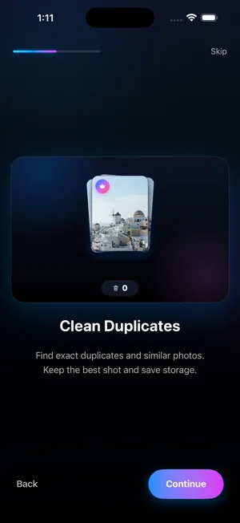

How to delete duplicate photos on iPhone
Updated · By Mohamed Elatabany
iOS has a built-in Duplicates album that merges exact copies for free. It does not catch similar shots, which is where most of the clutter usually is. Here is how to use both.
Method 1: the built-in Duplicates album (free, iOS 16 and later)
Since iOS 16, the Photos app scans your library on the device and lists duplicate photos and videos in an album called Duplicates.
Where Photos keeps its albums: on iOS 17, tap the Albums tab and scroll down. On iOS 18, scroll down below the photo grid to the collections. On iOS 26, tap Collections. Media Types (Videos, Live Photos, Screenshots, Bursts) and Utilities (Duplicates, Recently Deleted) are listed there.
- Open the Photos app.
- Go to Albums → Utilities → Duplicates (iOS 17), or scroll down to Utilities → Duplicates (iOS 18), or tap Collections → Utilities → Duplicates (iOS 26).
- Each row is one set of duplicates. Compare them, then tap Merge next to the set.
- Confirm with Merge Exact Copies or Merge Items, depending on what iOS found.
- To merge everything at once, tap Select, then Select All, then Merge at the bottom.
Merging keeps one version, the one with the highest quality, and combines relevant metadata such as captions, keywords and favorites into it. The other copies go to Recently Deleted, where they stay for 30 days. With iCloud Photos turned on, the merge syncs to your other devices.
If you don't see a Duplicates album
- The album only appears when Photos has found at least one duplicate.
- The scan runs in the background. After a large import or an iOS update it can take a while; leaving the iPhone locked and charging gives it time to finish.
- Your iPhone must be on iOS 16 or later. Photo Cleaner itself needs iOS 17 or later.
The limits of the built-in tool
The Duplicates album is good at one job: copies of the same image. That includes copies saved twice, the same photo received in several chats, or the same picture at a different resolution or with different metadata. What it does not do:
- Similar shots are ignored. Five takes of the same group photo, a row of almost identical sunsets, or photos taken a second apart are not duplicates to iOS, because they are not the same image.
- No "best shot" choice among similar photos. When you shoot several frames to get one good one, iOS will not help you pick it.
- No blur check. A sharp and a shaky version of the same moment are treated as two different photos.
For most people, exact copies are a small slice of the library. The bigger win is in near-identical shots.
Method 2: delete similar photos with Photo Cleaner
Photo Cleaner's Similars / Duplicates finder groups both exact copies and near-identical shots, then marks the best one in each group. The analysis runs entirely on your iPhone; nothing is uploaded.

- Install Photo Cleaner and allow Full Access to your photos so it can see the whole library.
- Open the Similars / Duplicates section. Photo Cleaner groups photos that look the same or almost the same.
- Open a group. The best shot is marked for you; check it, or choose a different one.
- Choose to keep the best only. The rest go to the Trash Bin, not straight to deletion.
- When you are done, open the Trash Bin, recover anything you want to keep, and empty it. iOS asks you to confirm, and the photos move to Recently Deleted.
Tips for choosing which copy to keep
- Check eyes and faces first in group photos. The sharpest frame is not always the one where everyone is smiling.
- Keep edited versions if you spent time on them. Edits in Photos are stored with the photo; deleting the edited copy deletes the edit.
- Favorites are worth a second look. If you hearted one copy, that is usually the one you meant to keep.
- Empty Recently Deleted afterwards if you need the storage right now. Until then, the deleted copies still take up space.
Built-in vs Photo Cleaner at a glance
| What it finds | Photos Duplicates album | Photo Cleaner |
|---|---|---|
| Exact copies | Yes | Yes |
| Near-identical shots | No | Yes |
| Marks the best shot | Keeps highest quality copy | Yes, in each similar group |
| Review before deleting | Recently Deleted (30 days) | Trash Bin, then Recently Deleted |
| Cost | Built in | Free download, 100 deletions free, one time |
Start with the free Merge in Photos, then use Photo Cleaner for the similar shots it leaves behind. See also: deleting blurry photos and freeing up storage from Photos.
Try the faster way
Photo Cleaner is free to download, with 100 deletions free, one time.
Get Photo Cleaner on the App Store